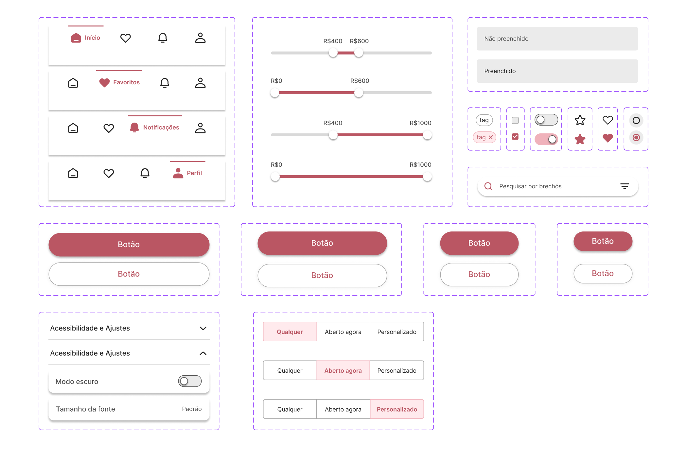

Rota dos brechós
Overview
Projeto em grupo realizado durante a capacitação em UX/UI design ofertada pelo Laboratório Bridge da Universidade Federal de Santa Catarina. O aplicativo Rota dos Brechós, surge como uma ferramenta que disponibiliza a localização e informações detalhadas sobre brechós em Florianópolis, contribuindo com o consumo consciente.
Minhas responsabilidades
Participei de todas as fases do desenvolvimento do projeto, desde as pesquisas iniciais até a elaboração dos wireframes e prototipagem. E tomei liberdade de implementar melhorias após o término da capacitação.
Ferramentas utilizadas


Problema
O perfil dos consumidores brasileiros vem mudando, cada vez mais vemos uma exigência por produtos que consideram o lado socioambiental, dando preferência a marcas que exercem transparência em sua cadeia produtiva unindo diversidade, sustentabilidade e inclusão. É dentro desses pilares que a moda circular cresceu, como um conceito para unir o melhor dos dois mundos: a preocupação socioambiental e um uso mais duradouro de roupas.
Objetivo
Desenvolver uma solução de aplicativo que não apenas promova, mas também facilite a adesão à moda circular, um conceito que ganha cada vez mais relevância diante das mudanças nos hábitos de consumo dos brasileiros.
Processo
Para a construção deste projeto nos foi apresentado um modelo de processo, desenvolvido pelos membros do Laboratório Bridge, o b_thinking . Ele é composto por princípios, etapas e métodos que servem como um guia para o trabalho dos times de design, produto e desenvolvimento.
Descoberta: Momento de explorar o problema, usuários, as possibilidades e montar propostas de soluções.
Entrega: Momento de desenvolver a solução, realizar a entrega, coletar e analisar feedbacks para evidenciar oportunidades de melhorias a serem trabalhadas no próximo ciclo.
-
Para esse projeto conseguimos realizar as seguintes etapas e métodos do momento de descoberta:
Matriz CSD
O projeto iniciou-se com a construção de uma Matriz CSD, que permite visualizar problemas e acelerar o processo, agrupando as informações em certezas, suposições e dúvidas. Essa abordagem facilita a organização e conexão das informações, permitindo à equipe uma visão clara do projeto desde o princípio.
Questionário online
A etapa seguinte foi o processo de coleta de dados, onde foi aplicado um formulário abrangendo perguntas qualitativas e quantitativas, visando obter uma compreensão abrangente das necessidades e percepções dos usuários. Este formulário recebeu um total de 29 respostas, fornecendo uma base significativa para análise e insights que orientaram o desenvolvimento do projeto. Abaixo serão apresentados alguns resultados:
Persona
Para garantir uma compreensão profunda e empática das necessidades dos potenciais usuários do aplicativo proposto, e para manter essas necessidades como o principal foco das decisões de design, desenvolvemos uma persona. Essa persona apresenta dados demográficos, objetivos e outras informações relevantes.
Histórias do usuário
Arquitetura da informação
Wireframes
Guia de estilo
Identidade visual
Sistema de grid
O grid é a estrutura fundamental do nosso design, oferecendo uma estrutura sistemática para organizar o conteúdo. Ele fornece uma estrutura clara e equilibrada, melhorando a consistência visual e a navegação do usuário em toda a interface.
Para o desenvolvimento do aplicativo foi utilizada as dimensões de tela de 360px de largura por 800px de altura. Além disso, o grid de construção segue a indicação do Google Material Design com 4 colunas (margens e gutter de 16px). Os elementos visuais e de interação também seguiram as guidelines do Material, utilizando dimensões múltiplas de 8, ou em casos específicos, múltiplas de 4.
Paleta de cores
Tipografia
Iconografia
Componentes
Teste de usabilidade
Contextualização
Foram realizados 2 testes de usabilidade com usuários que possuem o costume de comprar em brechós.Os protótipos foram desenvolvidos e acessados utilizando o Figma e/ou Figma Mirror. Todas as entrevistas foram realizadas de forma presencial.
Registro de dados: observação direta e entrevista.
Apoio: anotações em documento do Google.
Cenário
Você é uma estudante universitário e adora moda sustentável. Recentemente, você ouviu falar sobre um novo aplicativo de mapeamento de brechós na região de Florianópolis, e você está ansioso para experimentá-lo. Você baixou o aplicativo e agora está prestes a explorá-lo pela primeira vez.
Tarefas
- Encontrar um brechó perto de sua localização
- Saber mais sobre o brechó e conferir avaliações
- Utilizar a filtragem de pesquisa
Resultados obtidos
Ambos os participantes enfrentaram dificuldades na conclusão da primeira tarefa devido à falta de clareza na interatividade dos pins que marcavam os brechós no mapa. Além disso, consideraram que a disposição visual dos pins contribuiu para a dificuldade de compreensão e utilização da funcionalidade.
As outras duas tarefas foram realizados com facilidade.
Resultado
Resultado final das telas, as quais foram aprimoradas com base nas sugestões dos participantes dos testes de usabilidade, nas contribuições dos membros do grupo e nas melhorias adicionais implementadas por mim após a conclusão da capacitação.
Protótipo navegável
Caso não carregue, clique aqui para abrir em uma nova aba do navegador.